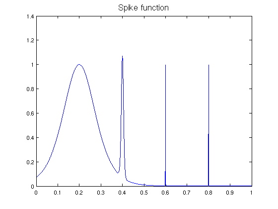

Spike integral
Nick Hale, October 2010
(Chebfun example quad/SpikeIntegral.m)
We demonstrate the adaptive capabilities of Chebfun by integrating the 'spike function'
f = @(x) sech(10*(x-0.2)).^2 + sech(100*(x-0.4)).^4 + ...
sech(1000*(x-0.6)).^6 + sech(1000*(x-0.8)).^8;
(which appears as F21F in [1]) over [0 1].
We create a Chebfun representation and plot the function, increasing 'minsamples' so that the spikes are not missed by an overly coarse initial sample:
ff = chebfun(f,[0 1], 'splitting','on','minsamples',129); plot(ff,'b','linewidth',1.6,'numpts',1e4) title('Spike function','FontSize',16)
Now we compute the integral. In order to estimate the time for this computation, we create the chebfun again without plotting it.
tic ff = chebfun(f,[0 1], 'splitting','on','minsamples',129); sum(ff)
ans = 0.211717021214835
Time for creating this chebfun and integrating it:
toc
Elapsed time is 0.357464 seconds.
References:
[1] D. K. Kahaner, "Comparison of numerical quadrature formulas", in J. R. Rice, ed., Mathematical Software, Academic Press, 1971, 229-259.